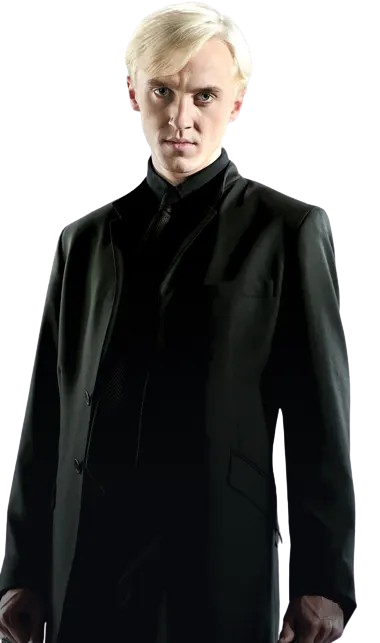
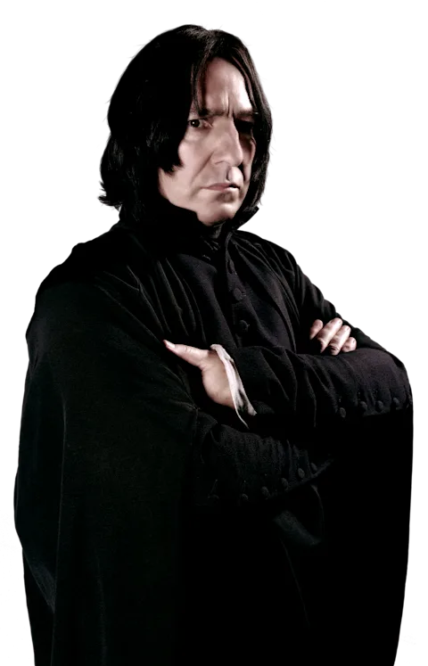
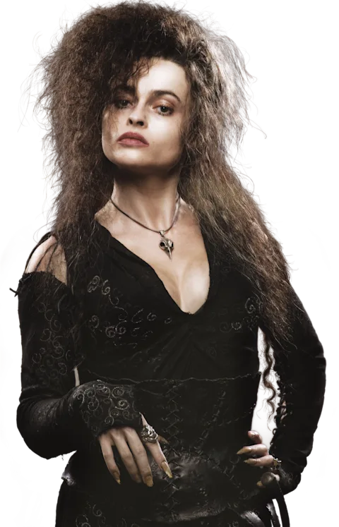
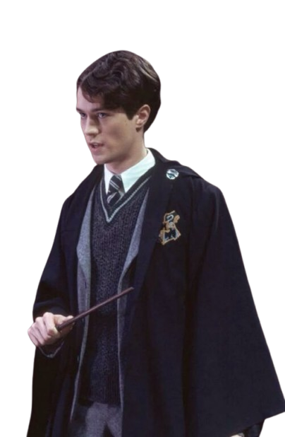

Draco Malfoy
Draco Malfoy é um bruxo sangue-puro, estudante da Sonserina em Hogwarts e o principal rival escolar de Harry Potter.
Um site sobre a sonserina
A Sonserina é uma das quatro casas da Escola de Magia e Bruxaria de Hogwarts, fundada por Salazar Slytherin. Representada pelas cores verde e prata e pelo símbolo da serpente, a casa valoriza acima de tudo a ambição, a astúcia, a determinação e a liderança. Sua sala comunal fica localizada no subsolo do castelo, nas masmorras, com janelas que dão para as profundezas do Lago Negro.
Embora tenha a fama histórica de abrigar grandes bruxos das trevas, como Lord Voldemort, a Sonserina também formou heróis e personagens de extrema importância e complexidade, como Severo Snape, Regulo Black e o lendário bruxo Merlin. Em suma, é a casa dos estrategistas e daqueles que buscam a grandeza com foco, inteligência e forte instinto de preservação.

Draco Malfoy é um bruxo sangue-puro, estudante da Sonserina em Hogwarts e o principal rival escolar de Harry Potter.

Snape atua inicialmente como um professor cruel e hostil, mas revelando-se um herói trágico guiado pelo amor.

Belatrix Lestrange foi uma Comensal da Morte sádica e a seguidora mais fanática de Lord Voldemort na saga.

Tom Servolo Riddle é o nome verdadeiro de Lorde Voldemort, o principal antagonista da série Harry Potter.
O fogo da sala comunal muda de acordo com o humor de quem está por perto. As chamas sobem com raiva ou criam névoa quando alguém chora.
O famoso Merlin estudou na Sonserina e valorizava a inclusão de trouxas.